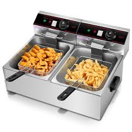
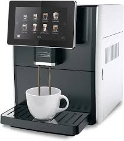
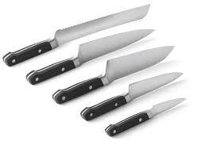
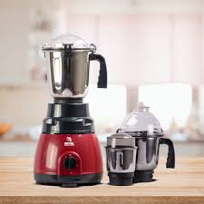
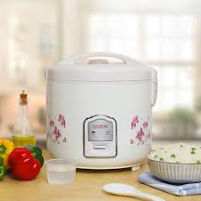

Fryer
Fryers are commonly used to prepare a variety of fried foods, such as french fries, chicken, fish, doughnuts,
Types of Fryers
-

- Deep Fryer:
Features a basket to hold food, which is then submerged in hot oil. It has adjustable temperature controls to maintain consistent cooking temperatures and suitable for cooking a wide variety of foods. - Air Fryer:
A relatively new type of fryer that cooks food using hot air circulation rather than oil and this is considered a healthier alternative to deep frying since it requires little to no oil. - Pressure Fryer:
The pressurized environment cooks food faster and helps retain moisture, making it popular in fast food establishments (e.g., KFC).
Coffee Maker
Coffee makers come in various types, each designed to cater to different tastes, brewing methods, and convenience levels.
Types Of Coffee Maker
- Drip Coffee Maker:
Works by dripping hot water over ground coffee beans placed in a filter. The brewed coffee then drips into a carafe below. - Single-Serve Coffee Maker:
Offers convenience and variety, as you can easily switch between different flavors and types of coffee.
knife
Knives are essential tools in any kitchen, used for a variety of tasks such as chopping, slicing, dicing, and peeling.
Types Of Knives
- Serrated Knife (Bread Knife):
Ideal for cutting through foods with a hard exterior and soft interior, such as bread, tomatoes, and citrus fruits. - Utility Knife:
A mid-sized knife, typically 4 to 7 inches long, with a narrow, straight blade. Used for tasks that are too large for a paring knife but too small for a chef's knife. - Boning Knife:
Designed for removing bones from meat, poultry, and fish. - Nakiri Knife:
Designed for chopping and slicing vegetables with precision. - Paring Knife:
Used for intricate tasks such as peeling, trimming, and slicing small fruits and vegetables.
Mixer
A mixer is a versatile kitchen appliance used for mixing, blending, and sometimes kneading ingredients
Types Of Mixers
- Hand Mixer:
Ideal for light to medium mixing tasks such as whipping cream, beating eggs, mixing cake batter, and making frosting. - Stand Mixer:
Equipped with a variety of attachments, such as a flat beater (for mixing batters), a dough hook (for kneading dough), and a wire whisk (for whipping). Often comes with optional accessories like pasta makers, meat grinders, and ice cream makers. - Immersion Blender (Hand Blender or Stick Blender):
Ideal for blending soups, sauces, and smoothies directly in the pot or bowl. Compact and easy to clean, often coming with additional attachments like a whisk or chopper.
Rice Cooker
It automates the process of boiling, steaming, and cooking rice, ensuring consistent results each time.
Types Of Rice Cookers
- Basic Rice Cooker:
Ideal for cooking plain white rice, but can also be used for steaming vegetables, making soups, or cooking grains like quinoa. - Micom Rice Cooker (Microcomputerized):
Offers different settings for various types of rice, such as white rice, brown rice, sushi rice, and porridge. - Induction Heating Rice Cooker:
Uses induction heating technology to cook rice, where the entire inner pot heats up rather than just the bottom.Provides even heat distribution and more precise temperature control, resulting in perfectly cooked rice.